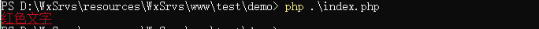

原文出处:本文由博客园博主码缘提供。
原文连接:https://www.cnblogs.com/itsuibi/p/11121628.html
原文连接:https://www.cnblogs.com/itsuibi/p/11121628.html
今天执行composer的时候看到命令窗口出现的提示里面有的关键性部分带有颜色，于是很好奇研究了一下，在这里记录下来
其实在命令行输出带颜色字体主要是使用的 ANSI 转义字符实现的，我们先看个例子：
<?
echo "\033[38;5;1m红色文字\033[0m";显示：
在终端中，ANSI定义了用于屏幕显示的Escape屏幕控制码，其格式为：
\033[38;5;1m红色文字\033[0m
代表开始设置标签
代表设置完成标签
代表设置参数
代表要显示的字符
这里开始标签和结束标签都是固定的，开始标签是 “\033[” 结束标签是 “m” 其中参数部分的含义可以按照下表中的参数来设置
| 代码 | 作用 | 备注 |
|---|---|---|
| 0 | 重置/正常 | 关闭所有属性。 |
| 1 | 粗体或增加强度 | |
| 2 | 弱化（降低强度） | 未广泛支持。 |
| 3 | 斜体 | 未广泛支持。有时视为反相显示。 |
| 4 | 下划线 | |
| 5 | 缓慢闪烁 | 低于每分钟150次。 |
| 6 | 快速闪烁 | MS-DOS ANSI.SYS；每分钟150以上；未广泛支持。 |
| 7 | 反显 | 前景色与背景色交换。 |
| 8 | 隐藏 | 未广泛支持。 |
| 9 | 划除 | 字符清晰，但标记为删除。未广泛支持。 |
| 10 | 主要（默认）字体 | |
| 11–19 | 替代字体 | 选择替代字体{\displaystyle n-10} 。 。 |
| 20 | 尖角体 | 几乎无支持。 |
| 21 | 关闭粗体或双下划线 | 关闭粗体未广泛支持；双下划线几乎无支持。 |
| 22 | 正常颜色或强度 | 不强不弱。 |
| 23 | 非斜体、非尖角体 | |
| 24 | 关闭下划线 | 去掉单双下划线。 |
| 25 | 关闭闪烁 | |
| 27 | 关闭反显 | |
| 28 | 关闭隐藏 | |
| 29 | 关闭划除 | |
| 30–37 | 设置前景色 | 参见下面的颜色表。 |
| 38 | 设置前景色 | 下一个参数是5;n或2;r;g;b，见下。 |
| 39 | 默认前景色 | 由具体实现定义（按照标准）。 |
| 40–47 | 设置背景色 | 参见下面的颜色表。 |
| 48 | 设置背景色 | 下一个参数是5;n或2;r;g;b，见下。 |
| 49 | 默认背景色 | 由具体实现定义（按照标准）。 |
| 51 | Framed | |
| 52 | Encircled | |
| 53 | 上划线 | |
| 54 | Not framed or encircled | |
| 55 | 关闭上划线 | |
| 60 | 表意文字下划线或右边线 | 几乎无支持。 |
| 61 | 表意文字双下划线或双右边线 | |
| 62 | 表意文字上划线或左边线 | |
| 63 | 表意文字双上划线或双左边线 | |
| 64 | 表意文字着重标志 | |
| 65 | 表意文字属性关闭 | 重置60–64的所有效果。 |
| 90–97 | 设置明亮的前景色 | aixterm（非标准）。 |
| 100–107 | 设置明亮的背景色 | aixterm（非标准）。 |
根据表格我们可以看出 设置的参数 38表示设置前景色5表示颜色的设置模式表示的是256种颜色 1表示使用的那种颜色
除了设置颜色属性外我们还可以设置下划线等其他属性，而且并不是每种属性都需要设置多个参数，例如下划线属性我们直接添加个4就可以啦
<?php
echo "\033[38;5;1;4m红色文字\033[0m";
注意：由于各个系统终端的不同，所以有的设置是不起作用的或者效果会有所差异，最终效果以实际的显示效果为准！